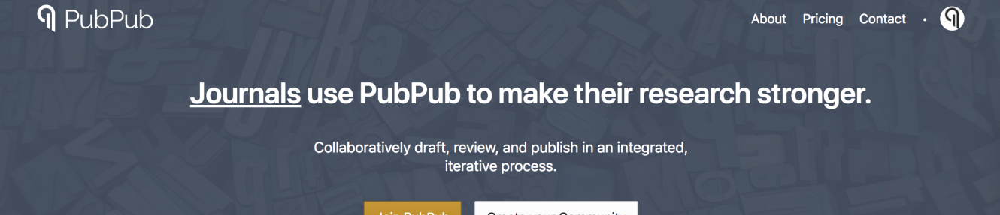
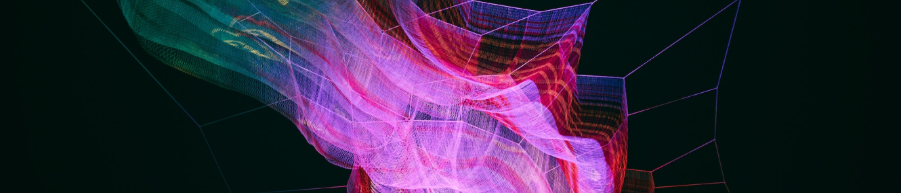
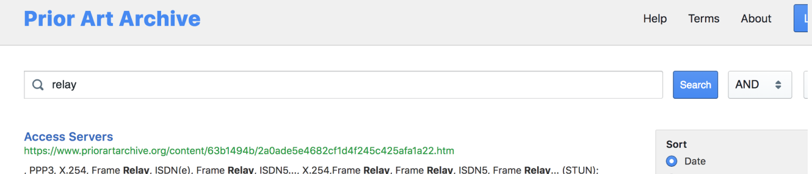

About the Group
The integrity of knowledge creation – and, with it, how we make sense of the world – depends on how effectively we can combat the spread of misinformation and democratize access to trustworthy, verifiable sources of information to stimulate progress in all areas of human activity. Open access to research information is of fundamental importance in this democratization effort, as is the commitment on the part of research and publishing communities to peer review and other methods of promoting the trustworthiness and reproducibility of research outputs. At the same time, we must devise smarter, more fool-proof ways of filtering for truth and discerning the provenance of the information we consume.
The MIT Knowledge Futures Group (KFG) is a new joint initiative of the MIT Press and the MIT Media Lab and is supported by generous funding from Reid Hoffman, co-founder of LinkedIn and a member of the MIT Media Lab’s Advisory Council. The KFG’s mission is to transform research publishing from a closed, sequential process, into an open, community-driven one, by incubating and deploying open source technologies to support both rapid, open dissemination and a shared ecosystem for information review, provenance, and verification. The partnership is the first of its kind between an established publisher and a world-class academic lab devoted to the design of future-facing technologies.
Rationale
In order for mission driven publishers to flourish into the future, it is imperative that we establish our own innovation pathways. At the same time, universities must assert greater ownership and influence over the ecosystems for sharing and verifying knowledge given how critical it is to their core mission. The development of open source alternatives to the stranglehold that a few commercial entities now have on not the markets for information, reputation systems, publishing technologies, and digital innovation will benefit the research community and the reading public alike.
Objective
The KFG will serve as a test kitchen, incubator, and a staging platform for the development and launch of open source publishing technologies and aligned open access publications, staffed jointly by the Press and the Media Lab. The open source approach not only reduces the precarious dependency that most non-profit academic publishers have on costly outsourced technologies and a limited network of commercial vendors, but also provides a foundation for greater insourced experimentation and innovation. We are seeking funding partners to help us strengthen our capacity over the next two to three years, as we develop models that will make the group's work self-sustaining.
Partnership
The MIT Press and the Media Lab have a long history of collaboration, beginning with renowned designer Muriel Cooper, who was the Press’ first art director and later a founding faculty member of the Media Lab. Both Press and Lab reflect the values of MIT, an institution that places a premium on experimentation, invention, and open information access. Since its launch in 1962, the MIT Press has been changing the rules of engagement between academic authors and their readers. The Press was one of the first publishers to exploit the potential of the Internet, producing open access interactive books as early as the mid-1990s. From its inception in 1985, the Media Lab was at the vanguard of the technology that enabled the digital revolution and enhanced human expression. Now in its fourth decade, the Lab continues to check traditional disciplines at the door as designers, nanotechnologists, data visualization experts, biologists, and computer interface pioneers work side by side to reinvent the human-technology relationship.
Current Projects
PubPub (stay in touch)
PubPub is an open authoring and publishing platform initially developed as a Media Lab project. It socializes the process of knowledge creation by integrating conversation, annotation, and versioning into short and long-form digital publication. Among the books now on PubPub is Frankenbook, an interactive edition of Frankenstein: Annotated for Scientists, Engineers, and Creators of All Kinds (MIT Press, 2017). Community contributed annotations on the platform live alongside multimedia elements and a series of essays; classrooms and reading groups are encouraged to create their own digital edition to host private discussions and manage assignments. Also on PubPub is the Journal of Design and Science (JoDS), which forges new connections between science and design and breaks down the barriers between traditional academic disciplines. We see JoDS as a node in a global network of online debate and discussion rooted in the Media Lab’s research and design ethos.
The Underlay Project (stay in touch)
The Underlay is a planned protocol and set of tools to connect and archive publicly available knowledge, and its provenance. The Underlay provides mechanisms for distilling a knowledge graph from open publications, for instance making the data and content hosted on PubPub broadly archived and available to other platforms.
Prior Art Archive
One of the first projects using the Underlay, the Prior Art Archive is a public archive of prior art with machine-readable metadata, hosted by MIT and indexed by Google Patents.
Supporters


Group Members
Catherine Ahearn
Amy Brand
Director, MIT Press
Terry Ehling
Joel Gustafson
Protocol Labs
Joi Ito
Director, MIT Media Lab
Danny Hillis
MIT Media Lab & Applied Minds, LLC
SJ Klein
Travis Rich
Gabe Stein